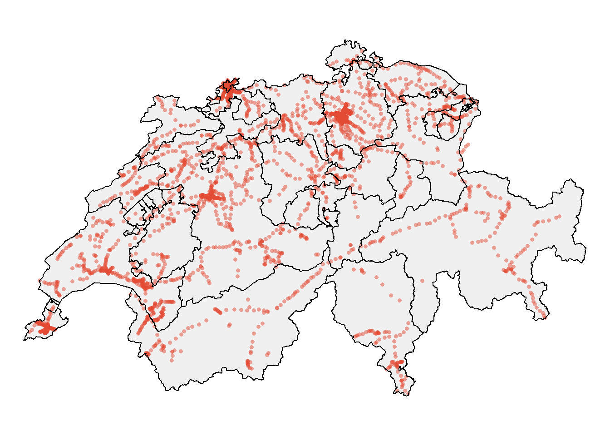
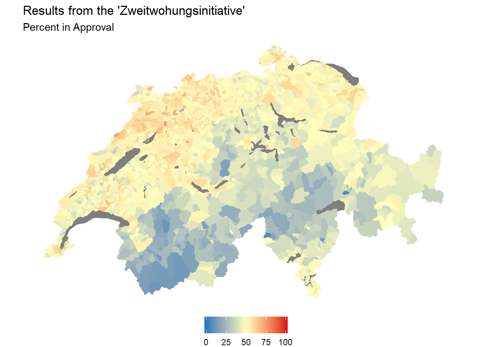
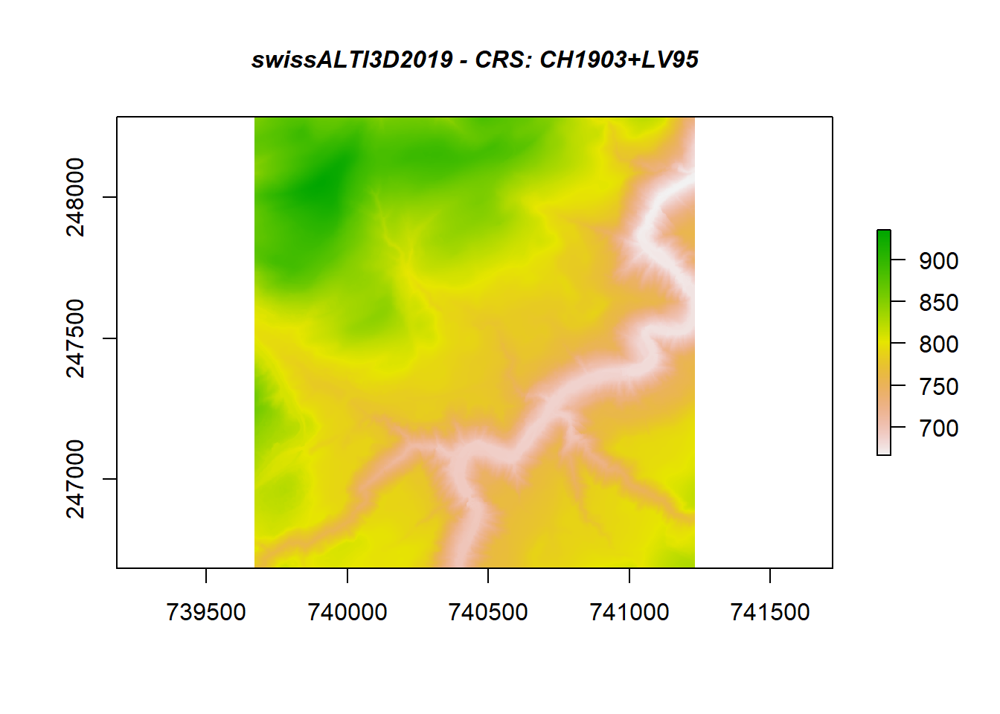
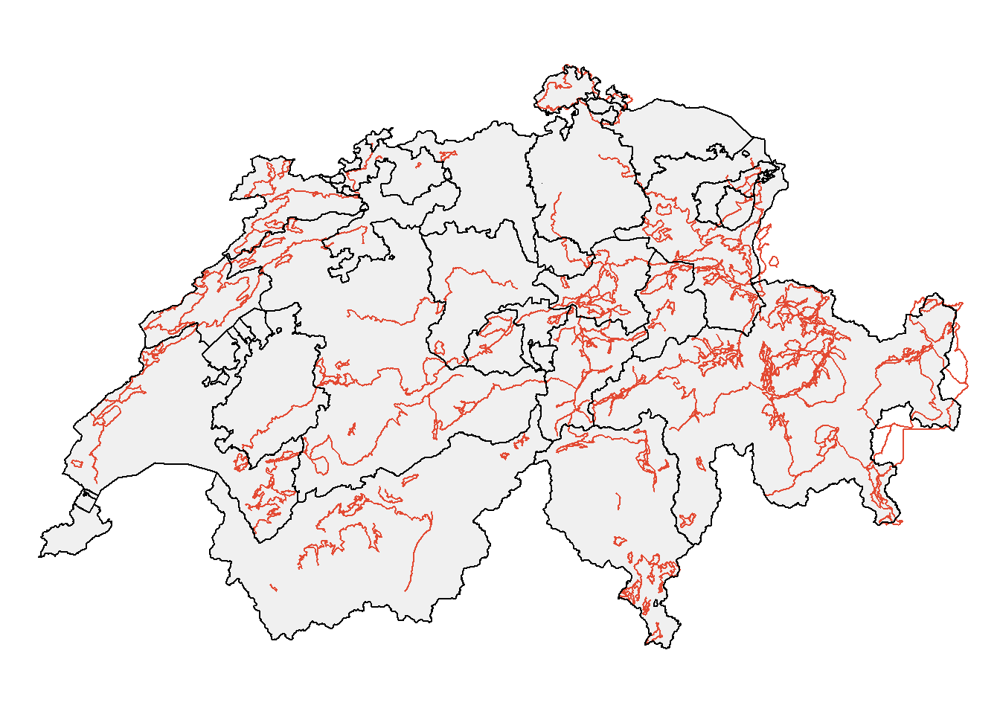

5.3 Spatial Intersections
5.3.1 Clip operation
## Reading layer `Haltestelle_Bahn_CH' from data source `C:\Users\bako\Desktop\Projekte\All_thing_R_Spatial\github\spatialR_for_ArcGIS_Users\sample_data\other\Haltestelle_Bahn_CH.shp' using driver `ESRI Shapefile'
## Simple feature collection with 3134 features and 16 fields
## geometry type: POINT
## dimension: XYZ
## bbox: xmin: 2488908 ymin: 1076850 xmax: 2817389 ymax: 1289090
## z_range: zmin: 194.905 zmax: 3453.525
## projected CRS: CH1903+ / LV95## Reading layer `Kantonsgebiet' from data source `C:\Users\bako\Desktop\Projekte\All_thing_R_Spatial\github\spatialR_for_ArcGIS_Users\sample_data\other\Kantonsgebiet.shp' using driver `ESRI Shapefile'
## Simple feature collection with 51 features and 22 fields
## geometry type: POLYGON
## dimension: XYZ
## bbox: xmin: 2485410 ymin: 1075268 xmax: 2833858 ymax: 1295934
## z_range: zmin: 193.51 zmax: 4613.729
## projected CRS: CH1903+ / LV95tmap_mode(mode = c("plot"))
tm_shape(kantonsgebiet) + tm_polygons("#f0f0f0") +
tm_shape(bahn_haltestelle_ch) + tm_dots(col = "#e34a33",size = 0.1, alpha = 0.5) +
tm_shape(kantonsgebiet) + tm_borders(col = "black") + tm_layout(frame = F)
We want now to analyse the situation at a particular area. So we are going to create an index with the specific cantons we are interested in.
index <- kantonsgebiet$name == "Zürich" |
kantonsgebiet$name == "St. Gallen" |
kantonsgebiet$name == "Thurgau" |
kantonsgebiet$name == "Aargau"
kantons_aOi <- kantonsgebiet[index,]
hal_clipped <- st_intersection(kantons_aOi,bahn_haltestelle_ch)Plot the result from the clipping operation
tm_shape(kantons_aOi) + tm_polygons("#f0f0f0") +
tm_shape(hal_clipped) + tm_dots(col = "#e34a33",size = 0.1, alpha = 0.5) +
tm_shape(kantons_aOi) + tm_borders() + tm_layout(frame = F)
So, ultimately, as we can see above, the st_intersection function creates a result where the point dataset is precisely “clipped” based on the area of interest
The operation above produces the same outcome as the one depicted in the figure below 5.2.

Figure 5.2: Clip operation in ArcGIS pro
5.3.2 Buffer operation
One of the most commonly used operations in ArcGIS pro is the one called Buffer. This operation provides a very convenient way of identifying areas of interest lying in the neighborhood of an existing spatial feature. In R the same action can be performed using the st_buffer function in sf.
Below we introduce a line spatial feature that depicts all the mountain bike routes in Switzerland.
## Reading layer `mountainBikes_routes' from data source `C:\Users\bako\Desktop\Projekte\All_thing_R_Spatial\github\spatialR_for_ArcGIS_Users\sample_data\other\mountainBikes_routes.shp' using driver `ESRI Shapefile'
## Simple feature collection with 286 features and 29 fields
## geometry type: LINESTRING
## dimension: XYZ
## bbox: xmin: 2497570 ymin: 1077136 xmax: 2836678 ymax: 1296227
## z_range: zmin: 197.367 zmax: 2860.725
## projected CRS: CH1903+ / LV95
We focus, as an area of interest, on the canton of Valais. Consequently, we might be interested in identifying all the areas in a radius of 1000 m around these bike routes.
- Selecting the canton of Valais

- Apply a buffer of 1000m on each of the mountain bike routes within the canton of Valais
routes_buffer <- st_buffer(mountainBikes_routes_valais,1000)
tm_shape(canton_valais) + tm_polygons() +
tm_shape(mountainBikes_routes_valais) + tm_lines(col = "#e34a33") +
tm_shape(routes_buffer) + tm_polygons(col = "blue", alpha = 0.2) +
tm_shape(canton_valais) + tm_borders(col = "black") + tm_layout(frame = F)